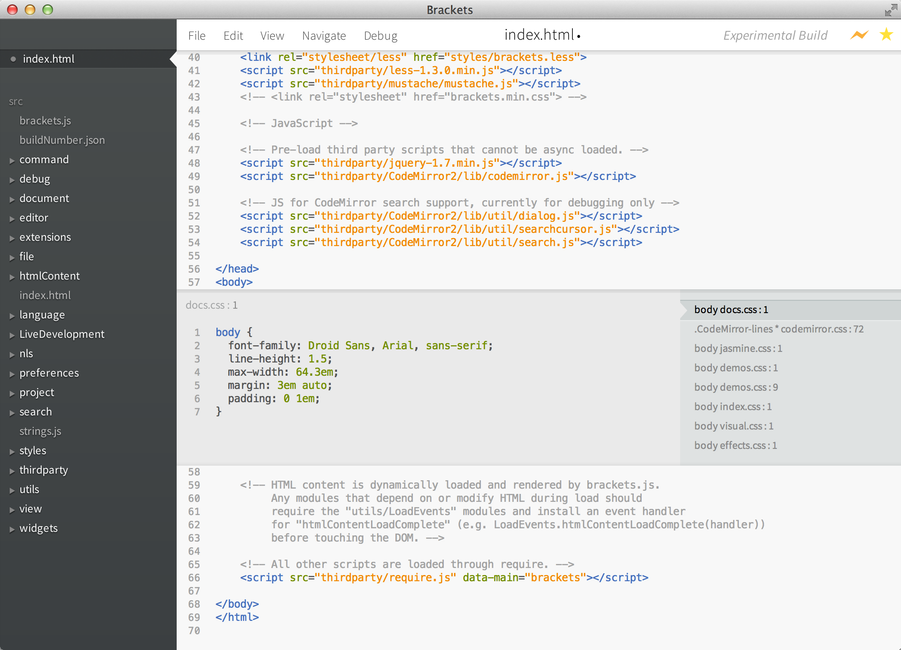

Добро пожаловать в супер ранний предпросмотр Brackets, нового редактора с открытым исходным кодом для веба следующего поколения. Мы большие фанаты стандартов и хотим построить лучший инструмент для JavaScript, HTML и CSS и связанных с ними открытых веб-технологий. Это наше скромное начало.
Вы видите раннюю версию Brackets. Во многих отношениях, Brackets необычный редактор. Одна примечательная особенность в том, что этот редактор написан на JavaScript. Так, может быть Brackets пока ещё не совсем готов к ежедневной работе, мы используем его каждый день, чтобы создавать Brackets.
Во время редактирования HTML, используйте сочетание клавиш Cmd/Ctrl + E для открытия быстрого редактора, который показывает весь связанный с этой строкой CSS. Сделайте изменение вашего CSS, нажмите ESC и вернитесь обратно к редактированию HTML. Или просто оставьте блок с CSS правилами открытым, и они станут частью вашего HTML редактора. Если вы нажмете ESC вне быстрого редактора, все CSS правила закроются. Больше никакого переключения между документами и потери контекста.
Хотите увидеть это в действии? Поставьте курсор на теге выше и нажмите Cmd/Ctrl + E. Вы должны увидеть, как выше появится быстрый редактор CSS. Справа вы увидите список CSS правил, которые относятся к этому тегу. Просто прокрутите правила вниз, используя Alt + Up/Down, чтобы найти то, которое вы хотите отредактировать. Вы знаете эти пляски с "сохранить/перезагрузить", которые мы делаем годами? Когда вы делаете изменения в вашем редакторе, нажимаете сохранить, переключаетесь в браузер и затем нажимаете перезагрузить, чтобы наконец увидеть результат? Вместе с Brackets этого больше не придется делать.
Brackets откроет прямое соединение с вашим локальным браузером и направит ваши изменения CSS, как только вы их напечатаете! Вы возможно уже делали что-то подобное с основанными-на-браузере инструментами, но с Brackets больше нет нужды копировать и вставлять финальный CSS обратно в редактор. Ваш код запускается в браузере, но живет в вашем редакторе!
Если у вас есть установленный Google Chrome, вы можете попробовать это сами. Нажмите на иконку молнии в правом верхнем углу или нажмите Cmd/Ctrl + Alt + P. Когда Интерактивный Предпросмотр включен в HTML документе, все подключенные CSS документы могут редактироваться в реальном времени. Иконка изменится с серой на золотую, когда Brackets установит соединение с вашим браузером. Теперь, поставьте курсор на теге выше и используйте Cmd/Ctrl + E, чтобы открыть записанные CSS правила. Попробуйте изменить размер границы с 1 пикселя до 10 или изменить цвет фона с "dimgray" на "hotpink". Если Brackets и ваш браузер работают вместе, вы увидите, как ваши изменения мгновенно отразятся в вашем браузере. Круто, правда?Сегодня, Brackets поддерживает Интерактивный Предпросмотр только для CSS. Сейчас мы работаем над поддержкой Интерактивного Предпросмотра для HTML и JavaScript. В текущей версии, вы не увидите изменений в вашем HTML файле до тех пор, пока не сохраните документ. Интерактивный Предпросмотр работает только с Google Chrome. Мы хотим внести этот функционал во все основные браузеры, и мы смотрим в будущее для работы с разными производителями.
Brackets - проект с открытым исходным кодом. Веб-разработчики со всем уголков мира способствуют созданию лучшего редактора кода. Дайте нам знать, что вы думаете, делитесь идеями или напрямую поддержите проект.